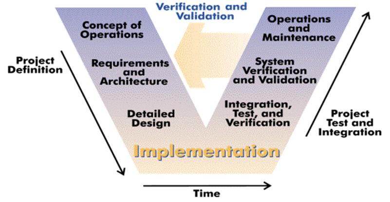

 The Open System Engineering Environment is an integrated, extensible tool environment for large engineering projects. It provides a tightly integrated environment supporting lean principles across a product's full life-cycle in the context of an overall systems engineering approach. OSEE's feature set includes configuration management, requirements management, testing, validation, and project management.
All project data is stored in OSEE's user-definable data model, which offers revision control, bidirectional traceability, project status reporting, and metrics.
The data integration and traceability features OSEE offers enable a coherent view of a project across its full life-cycle.
In addition to excelling as a stand-alone application, OSEE offers a full-featured API, enabling developers to harness OSEE's powerful data management capabilities for their own applications.
OSEE's advanced branch management capabilities, including change reports and automated merging, make it possible to control many variants of a project with ease. Since OSEE retains a full revision history of every resource in the system, engineers can make and review changes with greater confidence.
Read the OSEE Wiki and join the discussion at the forum to get involved in using or developing OSEE.
Our Eclipse project page can be found here: About OSEE